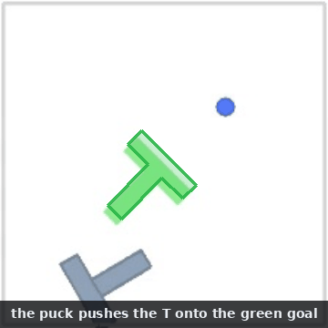
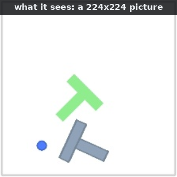
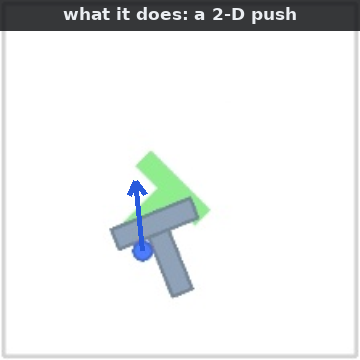
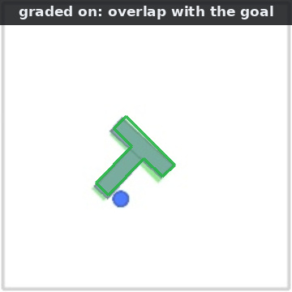
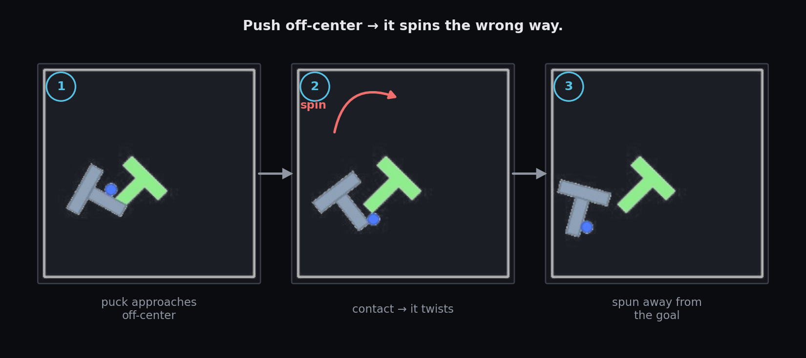
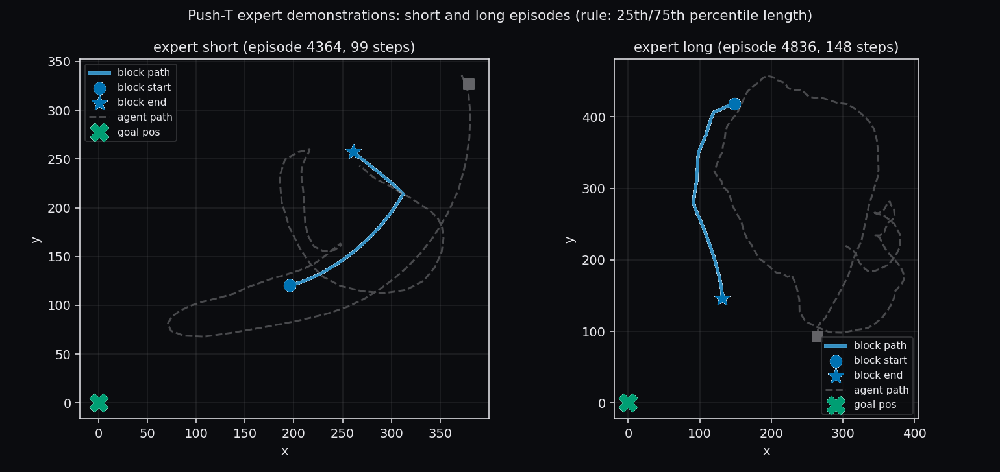
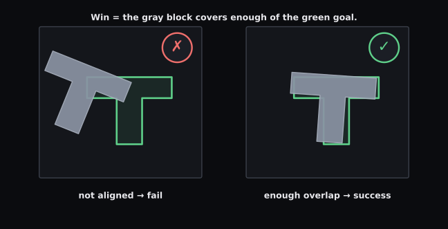

A round puck nudges a gray T into a green outline. That's the whole game.
The puck has no gripper and no suction — it can only move the T by bumping into it.

What the model sees, does, and is graded on
Three things define the task — what it sees, what it can do, and when it wins.



The fine print
Each episode gives the puck a budget of 50 steps to finish.
Training frames come from the quentinll/lewm-pusht dataset
(thousands of expert demonstrations). Success is scored as overlap measured by
intersection-over-union between the T and the goal footprint.
Why it's hard: the T fights back
Push the T off-center and it spins — so the puck spends most of its time circling around to set up the next clean push.

Because the puck can't grab the block, it's like parallel parking a T with only a round bumper: you can't rotate the object directly, only plan around the spin you just caused.

When does it count as a win?
Cover enough of the green outline with the gray T, hold it there, and you win.

There's no shaped reward and no near-miss bonus. The episode crosses the line or it doesn't.